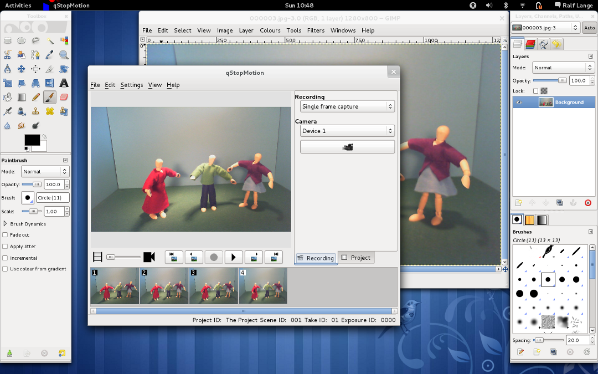

One especially useful example of using qStopMotion with other programs is to use gimp (or another painting program) to add effects to the frames.
Figure 7.1 Adding effects with gimp

The best way to do this is to select the frame in the project tree of qStopMotion and pressing the gimp button to start gimp. Change around with it in gimp, then save the picture in gimp (-> (Ctrl-S)) (not save as).
qStopMotion should detect the changes automatically.